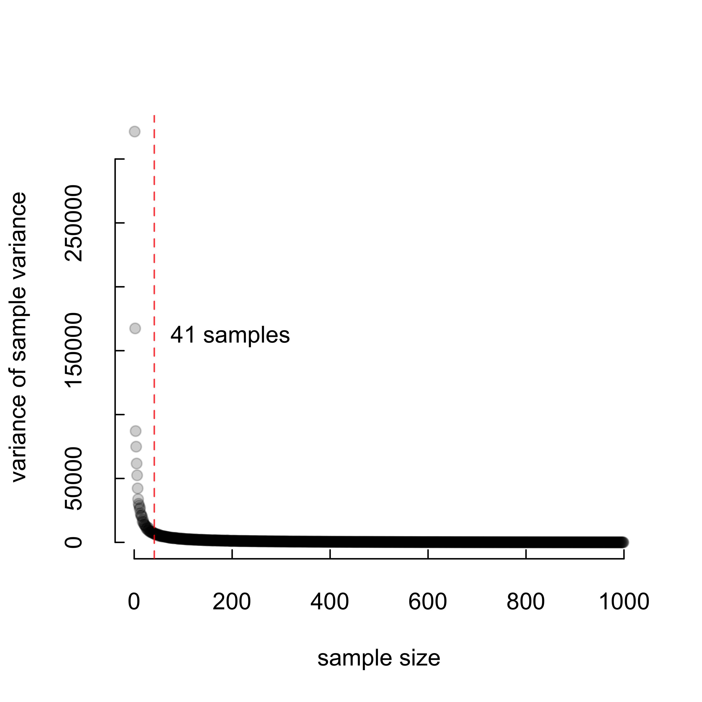
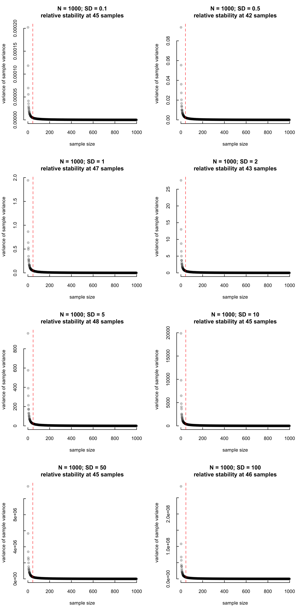
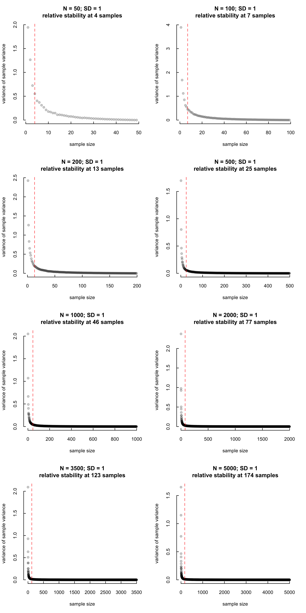

When is sample variance is a unreliable estimate of population variance?
Empirically showing that show that sample variance has high variance at low sample sizes
R
variance
sample-size
Author
Vikram B. Baliga
Published
May 5, 2019
Sample variance generally gives an unbiased estimate of the true population variance, but that does not mean it is a reliable estimate of population variance. Here, I show that sample variance itself has high variance at low sample sizes.
First, we’ll create a normally-distributed parent population with a known mean, variance, and sample size. This represents a natural population of something we’d like to study but for sake of time, money, or feasibility, we cannot measure everything. Our goal is to figure out how reliable smaller samples are with respect to estimates of variance. We’ll take increasingly larger samples from this population and see how sample variance fares.
mean =0SD =20# Therefore population variance should be ~ 400. # We'll set population size low-ish for sake of # computational timepopsize =1000set.seed(123) # reproducibility# generate the parent populationpop <-rnorm(popsize, mean, SD)# Determine the true population variance.# It may be different from SD^2, since we are simulating# from a normal distributionvar(pop)
[1] 393.3836
# Now create a sequence from 1 to popsize# in increments of 1Ns <-seq(1, popsize, 1)# Within a sample size, we'll create 1000 replicates# to help us generalize our findingsreps =1000# The var() function takes n-1 in the denominator to give# a less biased estimator of population variance. We also# need a function to give the variance if we've got the # whole population.var.p <-function(x) {var(x) * (length(x) -1) /length(x)}
How does sample variance ‘behave’?
Using our sequence of increasing sample size (Ns), we’ll now create a matrix of variances. Each row number will correspond to its sample size. E.g. all values in row [50,] are variances from random samples of n = 50 taken from the parent population. Therefore, samples in row [1000,] should be identical and equal to the parent population’s variance, since we are drawing all 1000 samples from the parent population.
This process is repeated 1000 (reps) times for each sample size.
# This may take some time.mymat =matrix(nrow =length(Ns), ncol = reps)for (i in1:dim(mymat)[1]){for (j in1:dim(mymat)[2]) { mymat[i, j] =var(sample(pop, Ns[i])) }}rownames(mymat) <-seq(1, length(Ns))# By definition, all the values in row [1,] will be "NA", # since variance cannot be computed for N = 1. # So we'll just remove the row.mymat[-1, ] -> varmat
It’s always good to visualize data. We’ll first plot these raw estimates of variance.
# Sample size will be on the x-axis# and sample variance will be on the y.# For a given sample size, 1000 reps were performed.plot(rep(2, ncol(varmat)), mymat[2, ],ylim =c(0, max(varmat)),xlim =c(0, nrow(mymat)),pch =19,col =rgb(0, 0, 0, alpha =0.2),xlab ='sample size',ylab ='sample variance',tck =0.02,bty ="n")for (i in3:nrow(mymat)) {points(rep(i, ncol(varmat)), mymat[i, ],pch =19,col =rgb(0, 0, 0, alpha =0.2))}# True population variance is ~ 400.abline(h =var.p(pop),col =rgb(0, 0, 1, alpha =0.5),lwd =3)# Compute the mean of sample variance at each sample size# and add it to the plot.lines(2:popsize, rowMeans(varmat),col ='orange', lwd =3)# Add a legendlegend(400, 1500, legend=c("True population variance","Means of sample variance"),col=c(rgb(0, 0, 1, alpha =0.5), "orange"), lty=1, lwd=3, box.lty=0)
Pretty crazy! The variation in sample variance is tremendous at small sample sizes. But the mean of this variation (orange) is basically identical to the true population variance (blue).
Let’s figure out at what point the variance of sample variances seem to become reliable. Since we know this happens at small sample sizes, we’ll just plot cases where sample size varies from 1 to 100 to get a more refined view of the data.
# Create a function to calculate the variances of sampled # variance across all the replicates.RowVar <-function(x) {rowSums((x -rowMeans(x))^2)/(dim(x)[2] -1)}# Variance of sample variances at each sample sizeRowVar(varmat)->varz# Plot of variance of variance at each sample size# Again, this is only for sample size <= 100.plot( varz[1:(length(pop) /10)],pch =19,col =rgb(0, 0, 0, alpha =0.2),xlab ='sample size',ylab ='variance of sample variance',tck =0.02,bty ="n")
This trend reminds me of what we see in scree plots when conducting PCA or in elbow plots when trying to determine the optimal number of clusters. The difficulty in applying those methods is that there isn’t an underlying covariance structure here (at least one that I can think of) that we’d be able to tease apart.
Fortunately, there is a package called changepoint that finds “changepoints” in series of data (based on shifts in either values or variance). Let’s implement the changepoint::cpt.var() function to identify a potential point where sample variances seem to stabilize.
install.packages("changepoint")
Installing changepoint [2.2.4] ...
OK [copied cache]
library(changepoint)
Warning: package 'changepoint' was built under R version 4.2.3
Loading required package: zoo
Warning: package 'zoo' was built under R version 4.2.3
Attaching package: 'zoo'
The following objects are masked from 'package:base':
as.Date, as.Date.numeric
Successfully loaded changepoint package version 2.2.4
See NEWS for details of changes.
# Plot againplot( varz,pch =19,col =rgb(0, 0, 0, alpha =0.2),xlab ='sample size',ylab ='variance of sample variance',tck =0.02,bty ="n")# At what sample size do we see stability?abline(v =cpt.var(varz[1:(length(varz) -1)])@cpts[1],col =rgb(1, 0, 0, alpha =0.8), lty=2)text(x =cpt.var(varz[1:(length(varz) -1)])@cpts[1] +5,y =0.5* varz[1],pos =4,paste(cpt.var(varz[1:(length(varz)-1)])@cpts[1],"samples"))

The vertical red line shows the sample size after which the variance of sample variance tends to be relatively low.
Can we find general patterns?
At what point is sample size large enough to trust its estimation of the true variance? Let’s first see if it depends on the parent population’s actual variance.
We’ll create a few other examples and see if we can find common patterns. We’ll fix population means at 0, population sizes to be 1000 but vary standard deviations (and therefore variance) widely.
mean =0reps =1000# Specify our SDs and set popsize to 1000 in each case.params <-expand.grid(SD =c(0.1, 0.5, 1, 2, 5,10, 50, 100),popsize =1000)# This function takes all the steps we did in the # previous analysis and function-izes it.varSamplr <-function(SD, popsize) { pop <-rnorm(popsize, mean, SD) Ns <-seq(1, popsize, 1) mymat =matrix(nrow =length(Ns), ncol = reps)for (i in1:dim(mymat)[1]) {for (j in1:dim(mymat)[2]) { mymat[i, j] =var(sample(pop, Ns[i])) } }rownames(mymat) <-seq(1, length(Ns)) mymat[-1, ] -> varmatRowVar(varmat)->varzplot( varz,pch =19,col =rgb(0, 0, 0, alpha =0.2),xlab ='sample size',ylab ='variance of sample variance',tck =0.02,bty ="n",main =paste("N = ", popsize,"; ","SD = ", SD,"\nrelative stability at ",cpt.var(varz[1:(length(varz) -1)])@cpts[1]," samples",sep ="") )# At what sample size do we see stability?abline(v =cpt.var(varz[1:(length(varz) -1)])@cpts[1],col =rgb(1, 0, 0, alpha =0.8),lty =2 )}# Organize so we can multi-plotpar(mfrow =c(4, 2))# Run. This will take some time.for (i in1:nrow(params)) {print(i)varSamplr(params[i, 1], params[i, 2])}
[1] 1
[1] 2
[1] 3
[1] 4
[1] 5
[1] 6
[1] 7
[1] 8

Pretty interesting! Although the standard deviation varies widely across these data sets (from 0.1 to 100), taking samples of size 1 through ~ 46 leaves us vulnerable to the dangers of the left side of the curve. So we’re seeing that samples of < 4-5% of the true population size are relatively unreliable.
Of course, the changepoint metric does also seem a little conservative. It might be worthwhile thinking of another way to find the point of relative stability.
Does population size matter?
One more thing I’d like to determine is if our results so far stem from fixing the population size at 1000. So, we’ll repeat this but instead of varying standard deviation, we’ll vary population size.
mean =0reps =1000# This time SD is set to 1 and popsize variesparams <-expand.grid(SD =1,popsize =c(50, 100, 200, 500,1000, 2000, 3500,5000))# Organize so we can multi-plotpar(mfrow =c(4, 2))# Run. This will take some time.for (i in1:nrow(params)) {print(i)varSamplr(params[i, 1], params[i, 2])}
[1] 1
[1] 2
[1] 3
[1] 4
[1] 5
[1] 6
[1] 7
[1] 8

So it seems that as true population size increases, so too does the location of the changepoint. Let’s plot this more explicitly:
Indeed it seems there is a direct (log-linear?) relationship. I’m sure this is covered by theory - perhaps somehow by the law of large numbers or the CTL. One hunch I have is that as population size decreases, our distributions get farther away from an ideal, infinitely-sized population.
In any case, the shape of the curve is pretty consistent across all these empirical trials. We can confidently conclude that we should not trust sample variance at low sample sizes. What remains to be seen is how “small” is too small